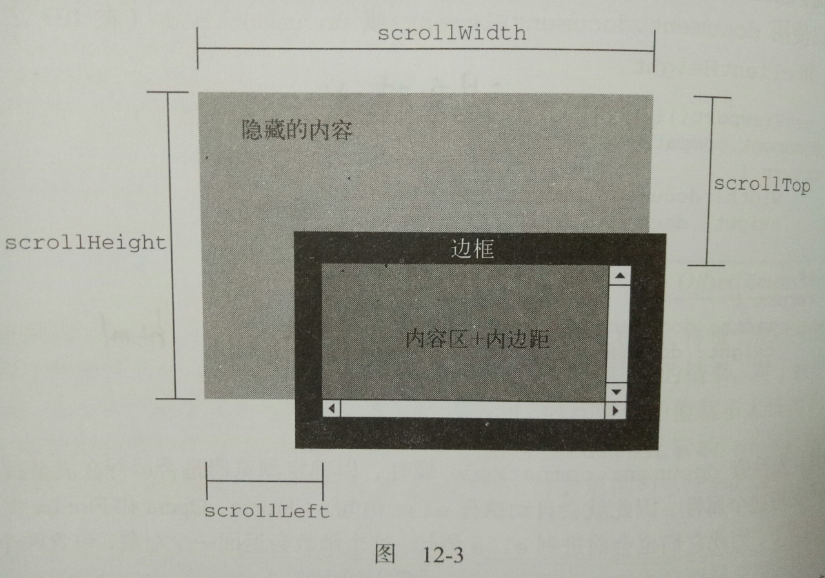
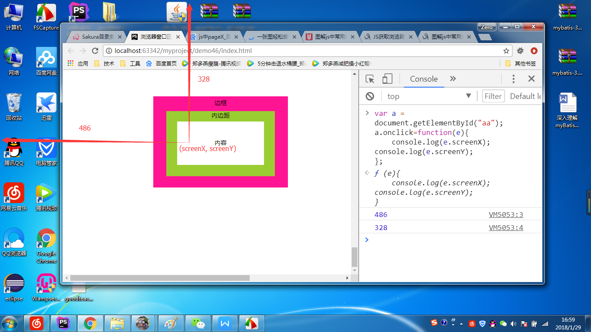

指的是元素内容（content）及其内边距（padding）所占据的空间大小。相关属性有两个：clientWidth、clientHeight。
clientWidth是元素内容区宽度加上左右内边距宽度；clientHeight是元素内容区高度加上上下内边距高度。
由图看出，客户区大小就是元素内部空间大小，因此滚动条占用的空间不算在内。常用在确定浏览器视口大小的时候。
var clientWidth = window.innerWidth || document.documentElement.clientWidth;
var clientHeight = window.innerHeight || document.documentElement.clientHeight;
元素的可见大小由其高度、宽度决定，包括所有内边距、滚动条和边框大小（不包括外边距）。
偏移量，包括元素在在屏幕上占用的所有可见的空间。
offsetWidth：元素在水平方向上占用的空间大小，包括元素的宽度、（可见的）垂直滚动条的宽度、左边框宽度和右边框宽度。
offsetHeight：元素在垂直方向上占用的空间大小，包括元素的高度、（可见的）水平滚动条的高度、上边框的宽度和下边框的宽度。
offsetLeft：元素的左外边框至包含元素的左内边框之间的像素距离。
offsetTop：元素的上外边框至包含元素的上内边框之间的像素距离。
以下是求某个元素在浏览器视口区域的偏移量的函数，原理即将此元素的offsetLeft和offsetTop与其offsetParent的相同属性相加，循环至根元素。
求元素的左偏移量
function getElementLeft(element) {
var actualLeft = element.offsetLeft,
current = element.offsetParent;
while (current !== null) {
actualLeft += current.offsetLeft;
current = current.offsetParent;
}
return actualLeft;
}
求元素的上偏移量
function getElementTop(element) {
var actualTop = element.offsetTop,
current = element.offsetParent;
while (current !== null) {
actualTop += current.offsetTop;
current = current.offsetParent;
}
return actualTop;
}
指的是包含滚动内容的元素的大小（确定元素的实际大小）。
scrollWidth：在没有滚动条的情况下，元素内容的总宽度。
scrollHeight：在没有滚动条的情况下，元素内容的总高度。
scrollLeft：被隐藏在内容区域左侧的像素数。通过设置这个属性可以改变元素的滚动位置。
scrollTop：被隐藏在内容上方的像素数。通过设置这个属性可以改变元素的滚动位置。
在确定文档的总高度时，为了能保证在跨浏览器环境下得到精确的结果，必须取得scrollWidth/clientWidth和scrollHeight/clientHeight的最大值。
var doc = document.documentElement,
docWidth = Math.max(doc.scrollWidth, doc.clientWidth),
docHeight = Math.max(doc.scrollHeight, doc.clientHeight);
指的是浏览器窗口相对于电脑屏幕的位置。
screenLeft：浏览器窗口相对于屏幕左边的位置。
screenTop：浏览器窗口相对于屏幕右边的位置。
在firebox中，用screenX和screenY表示。
以下是跨浏览器获取窗口左边和上边的位置：
var screenLeft = window.screenLeft,
screenTop = window.screenTop,
leftPos = (typeof screenLeft == "number") ? screenLeft : window.screenX,
topPos = (typeof screenTop == "number") ? screenTop : window.screenY;
（1）clientX和clientY
指的是事件发生时鼠标指针在视口中的水平坐标和垂直坐标。
（2）pageX和pageY
指的是鼠标指针在页面中的位置，在页面没有滚动时，pageX与clientX相等，pageY与clientY相等。那么页面滚动时，pageX与clientX、pageY与clientY的关系如下：
pageX = clientX + scrollLeft
pageY = clientY + scrollTop
IE8及更早版本不支持事件对象上的页面坐标，那么计算过程如下：
var myBox = document.getElementById("myBox");
myBox.onclick = function (event) {
var pageX = event.pageX,
pageY = event.pageY,
body = document.body,
html = document.documentElement;
if (pageX === undefined) {
pageX = event.clientX + (body.scrollLeft || html.scrollLeft);
}
if (pageY === undefined) {
pageY = event.clientY + (body.scrollTop || html.scrollTop);
}
console.log("Page coordinates:" + pageX + "," + pageY);
};
（3）offsetX和offsetY
指的是事件发生时，鼠标指针相对于事件目标对象的水平坐标和垂直坐标。
（4）screenX和screenY
指的是鼠标事件发生时，鼠标指针相对于整个屏幕的坐标信息。
如下图所示：
